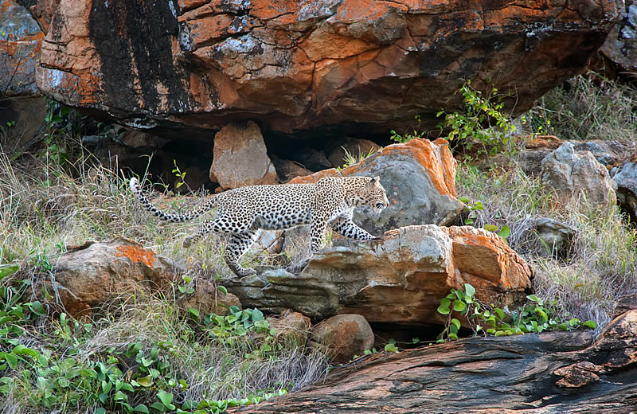
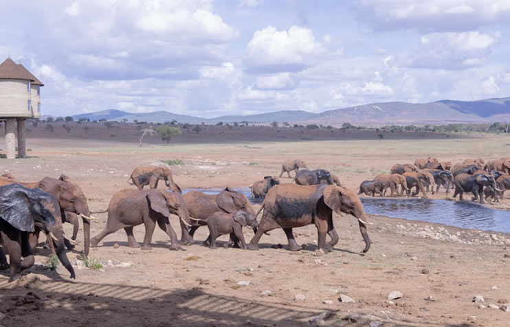

Un tour completo tra i principali parchi del Kenya, gli animali della savana e paesaggi indimenticabili.
Partenza dal vostro alloggio verso le ore 06:15. Sosta al Crocodile Point per osservare i coccodrilli nel fiume Galana. Ingresso nel parco Tsavo Est verso le 10:00 e inizio del game drive. Pranzo e relax al lodge. Nel pomeriggio secondo safari fotografico fino al tramonto. Cena e pernottamento.
Colazione e partenza verso Taita Hills. Arrivo al lodge, check-in e pranzo. Nel pomeriggio game drive fino al tramonto. Possibilità di safari notturno extra con ranger del parco. Cena e pernottamento.
Game drive verso Tsavo Ovest. Arrivo al lodge per pranzo e relax. Nel pomeriggio safari fotografico tra i paesaggi dello Tsavo Ovest. Cena e pernottamento.
Partenza verso Amboseli. Arrivo al campo per pranzo e relax. Game drive pomeridiano con possibilità di ammirare il Monte Kilimangiaro. Cena e pernottamento.
Ultimo game drive all’alba. Possibilità di visitare un villaggio Masai tradizionale. Pausa pranzo durante il viaggio di ritorno. Arrivo a Watamu nel tardo pomeriggio.
Safari Privato
5 Giorni / 4 Notti
Tsavo • Taita • Amboseli
Masai Mara:
Sentrim Mara,
AA Lodge,
Mara Sweet Acacia
Amboseli:
Kilima Camp,
AA Lodge,
Kibo Camp,
Sentrim Amboseli
Tsavo Ovest:
Ngulia Lodge
Taita Hills:
Sarova Salt Lick
Tsavo Est:
Voi Wildlife Lodge,
Manyatta Camp,
Sentrim Tahri Camp
Portare crema solare, repellente tropicale, cappello, scarpe comode, farmaci di prima necessità, power bank, fotocamera, binocolo e adattatore inglese. RICORDA: il drone in Kenya è vietato.
N.B. I safari possono subire variazioni di programma, orari o strutture. Sarete avvisati tempestivamente in caso di cambiamenti.